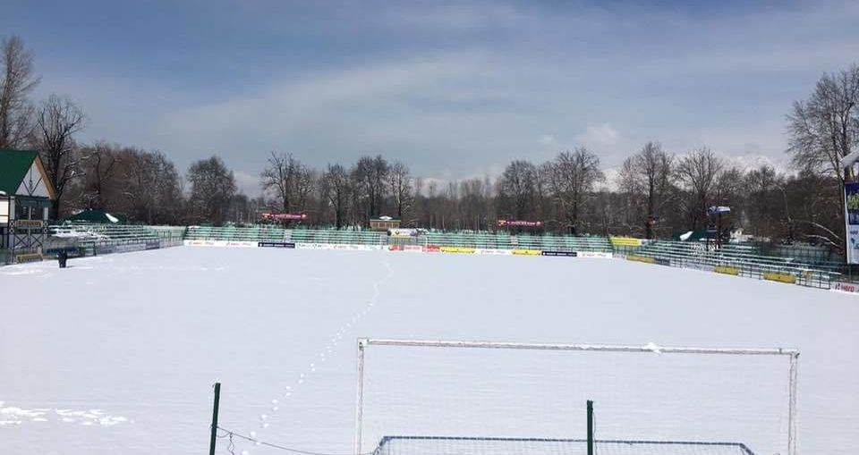

Posted at Date: February 08, 2019
Credit : রাইট স্পোর্টস ওয়েব ডেস্ক
আবহাওয়ার কারণে স্থগিত কাশ্মীরে ইস্টবেঙ্গল ম্যাচ

বরফ পড়ছে। আবহাওয়া প্রতিকূল। আগামী দিনদুয়েকের মধ্যে পরিস্থিতির উন্নতি হওয়ার আশা নেই, খেলার মতো অবস্থা নেই। তাই আপাতত স্থগিত হয়ে গেল রিয়েল কাশ্মীর বনাম ইস্টবেঙ্গলের ১০ ফেব্রুয়ারি ম্যাচ। কাশ্মীরের স্টেডিয়াম সম্পূর্ণ বরফে ঢাকা। এতটাই খারাপ অবস্থা যে, শ্রীনগর বিমানবন্দরে বিমানও ওঠানামা করতে পারছে না। গোকুলম খেলতে গিয়েছিল কাশ্মীরে, এখনও ফুটবলাররা ফিরতে পারেননি। এই মুহূর্তে অন্য কোথাও ম্যাচ স্থানান্তরিত করা হলে রিয়েল কাশ্মীরের ফুটবলারদের পক্ষেও সেখানে যাওয়া নিয়ে অনিশ্চয়তা। সেই কারণে সর্বভারতীয় ফুটবল সংস্থা জানিয়ে দিয়েছে, ম্যাচ স্থগিত রাখা হল। কোয়েস ইস্টবেঙ্গলের তরফে টুইট করে এই সিদ্ধান্তের কথা জানানো হয়েছে। বাতিল নয়, কারণ, ম্যাচ আবার পরে খেলা হবে। কিন্তু কবে, সেটা এআইএফএফ-এর কর্তারা বসে ঠিক করে নেবেন। আই লিগের যা অবস্থা তাতে অত্যন্ত গুরুত্বপূর্ণ ছিল এই ম্যাচ। রিয়েল কাশ্মীর এই মুহূর্তে ১৬ ম্যাচে খেলে ৩২ পয়েন্ট নিয়ে দ্বিতীয় স্থানে। ভুবনেশ্বরে ইন্ডিয়ান অ্যারোজকে ২-০ হারিয়ে, ১৫ ম্যাচে ৩৩ পয়েন্ট নিয়ে আবার চেন্নাই সিটি এফসি উঠে এসেছে শীর্ষে। ইস্টবেঙ্গলের ১৪ ম্যাচে ২৮ পয়েন্ট। তাই, ইস্টবেঙ্গল-কাশ্মীর ম্যাচের ফল ঠিক করে দিতে পারত, খেতাবি লড়াইয়ে কোন দল এগিয়ে বা পিছিয়ে থাকবে। কিন্তু আবহাওয়ার কারণে সেই সম্ভাবনা নিয়ে মাথাব্যথা থাকল এখন সবারই। এগার দিনে চার ম্যাচ খেলার কথা ছিল ইস্টবেঙ্গলের। এবার মাঝে খানিকটা সময় পাচ্ছেন ইস্টবেঙ্গলের ফুটবলাররা, ঠিক। কিন্তু, পরে এই কারণেই আরও কম ব্যবধানে বেশি ম্যাচ খেলতে হবে, নিশ্চিত।
Top Stories

Calcutta Sports Journalists' Club requests the pleasure of your company at its annual awards functionMore...

Jasprit Bumrah has been declared fit and he will now be available for selection for India's third Test against England at Trent Bridge. More...

Ronaldo has increased Juventus' standing among Europe's elite. More...